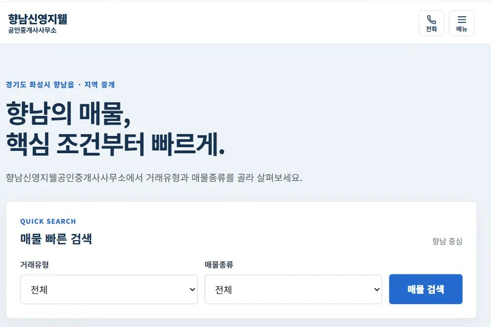

会計資格の取得
韓国の財経管理士、電算会計1級、電算税務2級を取得しました。資格・語学の一覧
会計・税務／日本語・日本文学
ダブルメジャー
会計・税務と日本語・日本文学を専攻するキム・サンヒョクです。
大学では授業の復習用に財務管理の要点ノートと問題集を制作しました。学外では母の不動産仲介の仕事を手伝い、お客様に希望条件に合う住まいを案内できるよう、香南（ヒャンナム）の物件検索サイトを開発しました。
韓国の財経管理士、電算会計1級、電算税務2級を取得しました。資格・語学の一覧
中間試験の範囲にあたる第3〜9章を、2つの学習サイトにまとめました。要点ノートでは、年金の初回受取日が現在価値に与える影響など、8つの問いを解説しています。問題集には授業の例題や過去問を含む95問を収録し、分野別に練習・復習できるようにしました。
どちらの学習サイトも、閲覧にはClaudeへのログインが必要です。
架空の卸売会社「ハンビット流通」の取引を題材に、証憑から仕訳を起こし、承認した伝票を総勘定元帳に転記するまでを学べる実習システムを作りました。
AIアプリと会計エンジンをMCPで接続しました。売上取引を選ぶと、エンジンが税金計算書と引渡記録を照合して伝票の下書きを作成し、出庫数量と単位原価から売上原価も算定します。
会計エンジンが借方・貸方の合計と証憑を確認した上で、学習者が伝票を承認するか、差し戻すかを判断します。承認時の内容と一致する伝票だけが元帳に転記されます。
ハンビット流通の制作記を読む
母の仲介事務所で扱う物件を、取引形態や物件種別から探せるサイトを開発しました。条件を絞った結果はURLで共有でき、相談の際に同じ条件で物件を案内できます。

事務所の独自ドメインをCloudflare Workersに接続しました。AstroがURLから検索条件を読み取り、Supabaseのデータベースに登録された公開中の物件を絞り込みます。
共有したURLを開くと、同じ条件で、その時点で公開中の物件が表示されます。価格帯の指定には、売買では売買価格、チョンセと月払い賃貸では保証金を使います。
チョンセのマンションを探すJLPTの級別に語彙を復習できる単語帳を作りました。覚えていない単語に印を付けると、その単語だけをまとめて復習できます。学習位置も保存され、次回は続きから再開できます。

ツールの導入を判断するため、3つのAIエージェントがSlackで提案の根拠と反例を検討する手順を設計しました。合意事項は共同の作業記録に残し、担当のエージェントが報告をまとめます。
取引先名の照合では、表記の似た別会社を誤って統合するおそれがあります。そこで、ツールは候補の抽出に使い、同じ取引先かどうかは担当者が判定する運用にしました。
毎週月曜日 08:00
会計・財務職と、日本語を使う職種を対象に、韓国内の有給インターンを毎週検索する仕組みを作りました。各募集の勤務地、応募条件、締切を一覧で比較できます。
京畿大学校で会計・税務と日本語・日本文学を専攻。会計プロジェクトでは取引証憑の照合と支払審査を扱いました。母の不動産仲介事務所では、物件検索サイトの開発と、録音から相談記録を作成する業務の自動化を担当しました。
日本語日本文学科をダブルメジャーとして履修
通算GPA 4.3/4.5 （2026年10月時点）
生鮮食品売場で商品の品出しと在庫管理を担当しました。
物件検索サイトを開発し、相談の録音を文字に起こして要約をNotionに保存する仕組みを作りました。11月9日の調査では香南の3団地で広告291件を確認し、新着広告と価格の変化をPDFとExcelにまとめました。
架空の卸売会社の取引証憑をMCP経由で取得し、伝票案を確認・承認して元帳に転記する仕訳実習を作りました。
架空の代理店50社の精算データ240件を分析しました。関連する取引先3社への月間支払額は、合算すると6か月連続で決裁上限の200万ウォンを超えていました。この結果をもとに、合算額に応じて決裁者を決め、資金不足時には調達案を担当部門に割り当てる模擬業務アプリを作りました。
財務管理の問題を分野別に解き直せるようにしました。日本語の単語帳では、級別の学習と、わからなかった単語の復習ができます。
各エージェントによる相互レビュー、判断根拠の記録、代表による報告の手順を設計し、取引先名の照合ツールの適用範囲を決める際に使いました。
研究開発費を資産として認識できるかといった会計上の論点について、4つのAIの判断根拠と反論を読み比べられる討論ツールを作りました。
担当箇所の日本語原文と韓国語の初訳を突き合わせて表現を推敲し、修正前後の訳文とその根拠をグループの発表資料にまとめました。
ソウル・明洞で日本人観光客3人に日本語でインタビューし、質問ごとに回答を整理して報告書にまとめました。
部員から募った貿易、株式、財務管理に関する提案を共通の関心ごとにまとめ、部の活動計画を立てました。